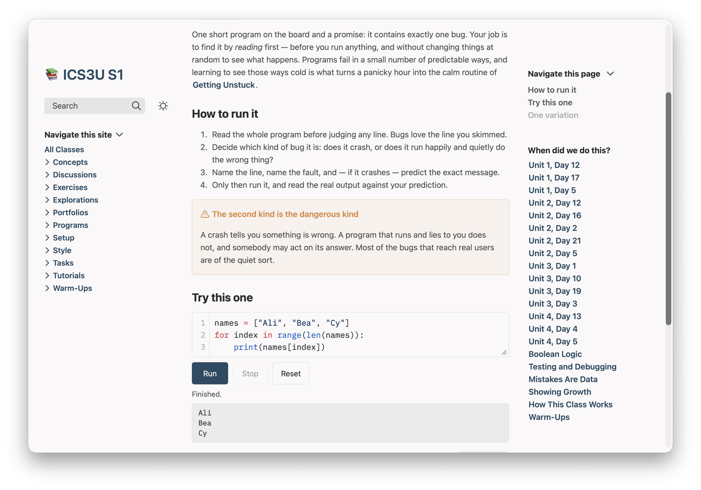
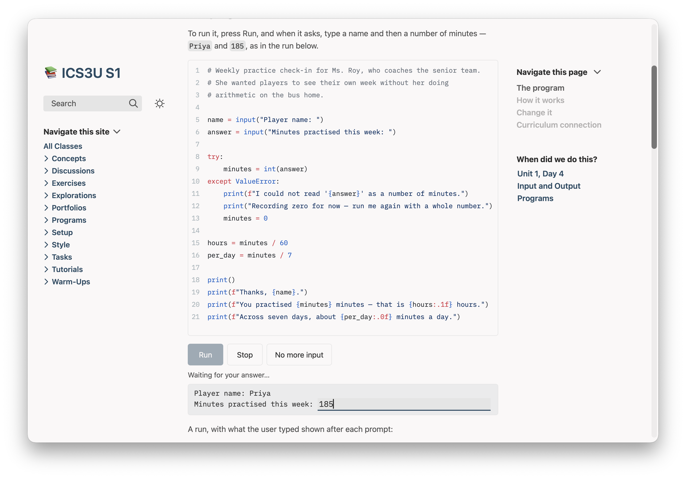
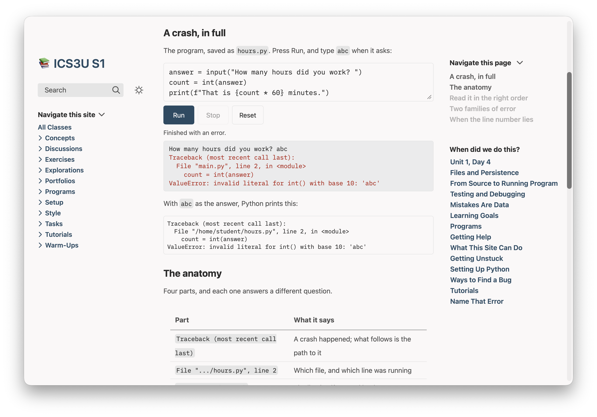
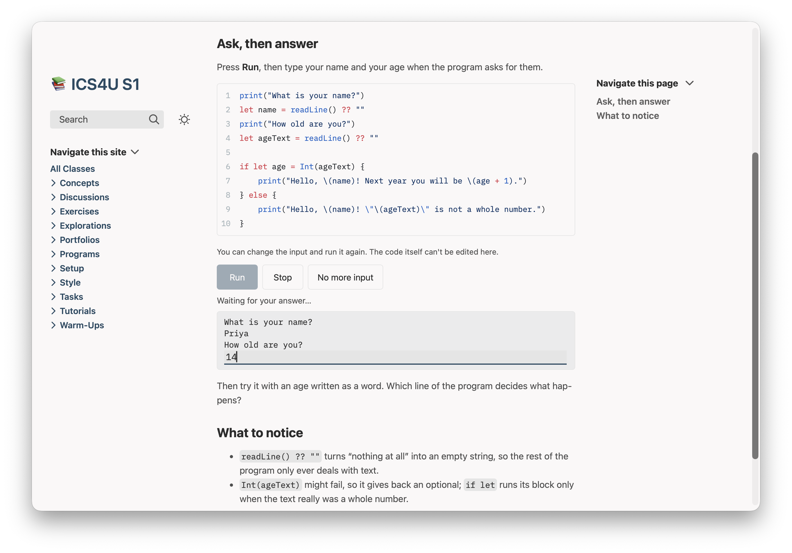
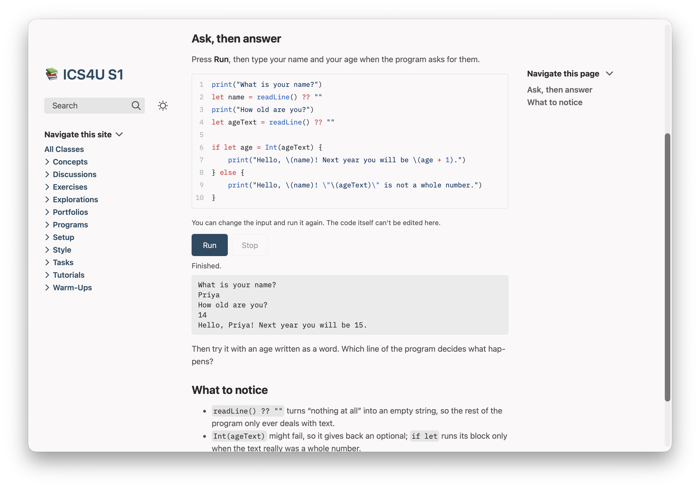

Code
Programs students run on the class website, and questions they check for themselves. Each starts as an ordinary code block or callout in your notes, with a word or two added.
Each part of this page shows the text you type, exactly as you type it, beside what students get from it. The two Python examples come from the ready-made course for ICS3U, so you can open the same pages in a course of your own. The Swift program and the quiz were written for this page.
Nothing here changes a page you already have. A code block without the extra word, or a page that doesn't ask for it, is built exactly as before.
Python students can run
Mark a page with one line in its settings, add the word run to a Python block, and students get the program in an editor with a Run button. They change it, run it, and read what it prints underneath — in the browser they already have, with nothing to install and no account. A program that asks for input stops and waits: the student types the answer right in the output and presses Return, just as in a terminal.
What you type
---
codeRunner: true
---
```python run
names = ["Ali", "Bea", "Cy"]
for index in range(1, len(names)):
print(names[index])
```What students get
The program in an editor, with Run, Stop and Reset under it and the output below. Their changes are kept in their own browser for next time; Reset brings back yours. This is Spot the Bug, with the bug found and fixed:

A program that asks for input stops at each input() and waits, with its prompt in the output and a place right after it to type the answer. Return sends it and the program carries on. This is Talking to the User, answered once and waiting for its second answer:

An error ends in Python's own traceback, and its line numbers are the lines in the editor:

Where the site can't stop to ask — a copy of the site put in a folder on a school's own web space, or a page that also shows a video or a picture from another website — students type the answers in a box before they press Run, one line for each input(), and Plantoir says which pages do that and why.
What it accepts
codeRunner: truein the settings block opts the page in. Written exactly like that.```python runmakes a block runnable. A plain```pythonblock on the same page stays code to read, so a page can mix the two.```python run readonlyruns but can't be changed — for a worked example.stdintreats a block as asking for input even when its code doesn't visibly callinput();autorunruns the block once when it scrolls into view.- Python's own standard library:
math,random,datetime,json,csvand the rest. Notturtleortkinter, and nothing that needspip install. - A file a program writes lasts for that one run. Each Run starts fresh.
- One program runs on a page at a time, and Stop ends any of them, a loop that never ends included.
The first Run on a page takes a moment while Python loads; later Runs start at once, until a program is stopped or another block's Run interrupts it. On paper a runnable block prints as code — the student's own, if they changed it. In Obsidian it stays an ordinary Python block.
On the Mac. The Windows version gets this in a later release.
Swift that asks, and waits for the answer
A ```swift run block runs too, on the same page setting. Swift blocks are read-only: students run the program, answer it as it asks, and run it again with other answers, and the code stays as you wrote it. Plantoir gets each Swift program ready when you preview the section, so it is waiting when a student opens the page.
What you type
```swift run
print("What is your name?")
let name = readLine() ?? ""
print("How old are you?")
let ageText = readLine() ?? ""
if let age = Int(ageText) {
print("Hello, \(name)! Next year you will be \(age + 1).")
} else {
print("Hello, \(name)! \"\(ageText)\" is not a whole number.")
}
```What students get
The code, highlighted, with Run and Stop and a line saying the code itself can't be edited. Press Run, and each readLine() waits for an answer typed right after its prompt:

With its answers, it carries on — the same transcript a terminal would show. Where the site can't stop to ask, the answers go in a box before Run, as for Python:

What it accepts
- The Swift students write in Grade 11 and 12: variables, loops, functions, optionals, arrays and dictionaries, structs, classes, enums and errors.
- A whole number (
Int) on the site holds up to 2,147,483,647. For factorials and big totals, useInt64. - No SwiftUI or anything else that needs an app or a screen.
- A block with a mistake in it never breaks the site: it shows its code with Run turned off, and Plantoir tells you the page, the line and what Swift said.
The first time you preview a course with a Swift block, Plantoir downloads what it needs to get Swift ready — about 1.3 GB, once, on your Mac. After that only a block you changed is made again, in a second or two.
On the Mac. The Windows version gets this in a later release.
Questions students check for themselves
A [!quiz] callout becomes a question students answer on the site and check with one button — with your explanation once they have. It is practice, never a grade: nothing a student does leaves their browser.
What you type
> [!quiz] What does this program print?
> ```python
> for count in range(3):
> print(count)
> ```
> - [ ] 1, 2 and 3, one to a line
> - [x] 0, 1 and 2, one to a line
> - [ ] 0, 1, 2 and 3, one to a line
> - [ ] Nothing: `range(3)` is empty
>
> > [!explain]- Why
> > `range(3)` starts at 0 and stops *before* 3, so the loop runs
> > three times, with `count` set to 0, then 1, then 2.What students get
The question with its choices, Check and Show answer. Checked, it says whether they were right and opens your explanation:

What it accepts
- Multiple choice: tick the right choice with
[x]. Tick two or more and it becomes select all that apply. - Short answer and fill in the blank: an
[!answer]callout inside the quiz, with each accepted answer separated by|. Write a blank as`____`. - Numbers are checked by value, so
0.5also accepts1/2;3.14 ± 0.01accepts anything in between. Capitals and extra spaces don't count against a student. [!explain]inside the quiz is shown after the student checks or shows the answer.[!quiz|shuffle]mixes the choices each time the page loads.- Graphs, pictures and runnable code work inside a question, a choice and an explanation.
Each page keeps a score in the student's browser — right on the first try — with Start again. On paper a quiz prints its questions only. In Obsidian you see it all, ticks and answers included: your answer key. A quiz that can't be checked shows its question with a line saying so, and Plantoir tells you the page and the line.
On the Mac. The Windows version gets this in a later release.
Or ask Claude or Codex
You don't have to learn any of this. Plantoir writes its guidance for runnable code and for quizzes into your working folder, and keeps it up to date, so Claude Code or Codex started there already knows how to opt a page in, which blocks are worth running, what to tell students to type when a program asks, and how to write each kind of question. There is nothing to install or paste.
Asked, in a working folder holding an ICS3U course, something like:
Make the examples on the page "courses/ICS3U/Concepts/Functions.md" runnable, so students can try them.its guidance has it add codeRunner: true to the page's settings, the word run to each block worth running, and a sentence telling students what to type when the program asks. Asked to add a 5-question check to this page, it writes five [!quiz] callouts of different kinds, each with its answer.
Open either from a course's menu with Revise With ▸ Claude… or Codex…, which starts it in your working folder.